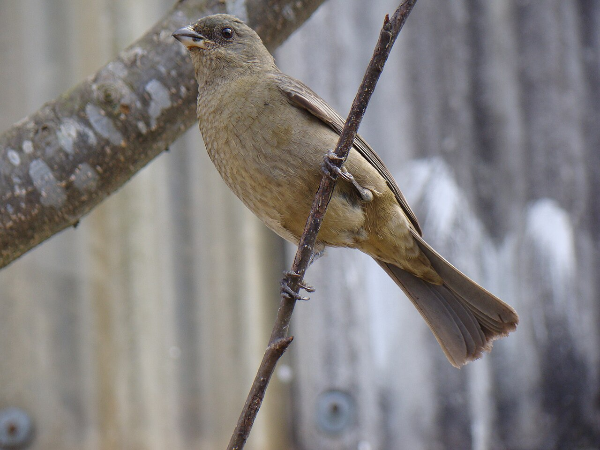

Lula.
diario de la mañana — el mundo, tu ciudad y lo que te asombra
Buen día. Desde hoy las ediciones vienen más cortas, y con más contexto cada vez que aparezca un nombre raro: si igual te perdés, avisame y afino. Hoy: el riesgo país argentino sube más que el de sus vecinos, y una ciencia que es puro mecanismo: cómo una planta que estuvo bajo el agua sobrevive al momento más peligroso, que no es la inundación sino el rescate. Y Arlt, con la frase que conviene tener pegada arriba del escritorio.
- El mundo en cinco minutos3'
- Argentina y Buenos Aires2'
- Ciencia: sobrevivir al rescate7'
- Mirá a tu alrededor2'
- Receta de estación2'
- La palabra del día1'
- Le français du matin2'
- English corner3'
- Letras argentinas: Roberto Arlt4'
- Hoy en la historia · un lugar2'
- Lo que me asombra hoy1'
- Pasatiempo: sudoku medio12'
- Cuaderno: repaso, quiz y escritura4'
Macron vuelve del Golfo con diésel y una huelga general esperándolo
El presidente francés cerró en Doha su gira por el Golfo con acuerdos para aumentar el suministro de gasoil a Francia. En París, el primer ministro Lecornu recibe hoy a los sindicatos: la huelga general ya está convocada para el 5 de noviembre, dos semanas después de las protestas que terminaron con 1.800 detenidos.
Por qué importa: Francia importa casi todo su gasoil y el cierre intermitente del estrecho de Ormuz le pegó de lleno. Es el mismo problema que acá se siente en el precio del flete: el combustible es el insumo que atraviesa todos los demás precios.
Japón: un año de la primera jefa de Gobierno
Sanae Takaichi cumple un año como primera ministra, la primera mujer en el cargo en Japón. Su política fiscal expansiva —más gasto y deuda para reactivar— tiene inquietos a los mercados, en un país con la deuda pública más alta del mundo desarrollado en relación con su economía.
Y además: la Guardia Revolucionaria iraní dice haber derribado un dron estadounidense MQ-9 sobre Ormuz, en una semana que ya dejó tres superpetroleros averiados por minas. En Gaza, la ONU calcula que más de 2.500 cuerpos siguen bajo los escombros en la zona bajo control israelí. Los hutíes aprietan el cerco sobre Taiz, en Yemen, donde viven cerca de un millón de personas. En Haití, más de 1.000 muertos este año por la violencia de las bandas. Y en Brasil, última semana de campaña antes del balotaje del domingo.
El riesgo país tocó 710 y cerró en 672
Día de montaña rusa: el índice que mide la sobretasa que el mercado le cobra a la deuda argentina llegó a 710 puntos durante la rueda —el máximo desde octubre de 2025— y cerró en 672. El dato que importa no es el número sino la comparación: según los análisis de ayer, el spread argentino equivale a más de tres veces el promedio latinoamericano, y los bonos locales cayeron más que los de sus pares en la misma jornada de volatilidad global.
Por qué importa: si todos los emergentes caen por igual, es el clima del mundo. Si uno cae más, es desconfianza con ese pagador. Lo que el mercado está mirando, según las notas de hoy, es cómo se cubren los vencimientos de 2027, y ahí pesa el anuncio de apoyo financiero de Estados Unidos por US$ 20.000 millones.
Para hacer en la ciudad
- Museo del Libro y de la Lengua (Las Heras 2555, al lado de la Biblioteca Nacional): el lugar para seguir con el tema de hoy, el idioma de los argentinos. Entrada gratuita.
- Para agendar: arteBA, del 30 de octubre al 1 de noviembre en La Rural.
Para una planta inundada, lo peligroso es el rescate
De qué estamos hablando: una planta bajo el agua se queda sin oxígeno. Pero el daño grave no llega ahí: llega cuando el agua baja y el oxígeno vuelve de golpe. Esa reoxigenación produce un estallido de especies reactivas del oxígeno (ROS) que oxidan lípidos y proteínas; en medicina es el daño por isquemia-reperfusión, el del infarto cuando se destapa la arteria. Cómo hace la planta para prepararse para ese segundo golpe es la pregunta, y la respuesta es elegante: usa el mismo sensor de oxígeno, leído al revés. Lo publicó en Nature el grupo de Francesco Licausi (Oxford), con Salma Akter como primera autora.
Quién es quién
- ERFVII: una familia de factores de transcripción de la planta (los «grupo VII»), los que prenden el programa de emergencia frente a la falta de oxígeno: fermentación, alcohol deshidrogenasa, aerénquima.
- PCO: las cisteína oxidasas de proteínas, las enzimas que son el sensor de O₂. Usan oxígeno como sustrato para oxidar la cisteína que los ERFVII tienen en el extremo N.
- La vía N-degrón: el sistema que decide la vida media de una proteína según cuál es su primer aminoácido. Si la cisteína está oxidada, la proteína queda marcada y se degrada en el proteasoma. O sea: hay oxígeno → PCO funciona → ERFVII se destruye. No hay oxígeno → ERFVII se acumula y prende el programa de hipoxia. Un sensor sin sensor: el oxígeno mismo es el reactivo.
El experimento
- Lo inesperado: al volver el oxígeno, los ERFVII no se degradan como mandaría el manual. Se quedan estables, porque las ROS del estallido inhiben a las PCO. El peróxido de hidrógeno le gana de mano al oxígeno sobre el mismo sensor.
- Y cambian de función: ahora reprimen los genes marcadores de hipoxia y activan los de defensa antioxidante.
- La prueba fenotípica: al final del tratamiento hipóxico (0,1 % de O₂) no había diferencia entre plantas salvajes y mutantes erfVII. La diferencia apareció después: los mutantes sobrevivieron mucho menos a la recuperación.
- La prueba inversa: pretratar las plántulas con un oxidante (TBHP, un peróxido orgánico) antes de la hipoxia mejoró la supervivencia de las salvajes, pero no la de los mutantes. Es decir: el beneficio pasa sí o sí por los ERFVII.
Lectura crítica
- Es Arabidopsis en cámara de cultivo con hipoxia controlada: una inundación real trae barro, patógenos y duración variable. Y la bisagra del modelo —cómo exactamente las ROS inhiben a las PCO, si por oxidación directa del sitio activo o no— queda para confirmar.
- Trabajé con el resumen y el preprint, no con las figuras. Ojo con un detalle que cambió entre versiones: el preprint usaba 0,5 % de O₂ y el paper, 0,1 %.
La conexión con lo que estudiás
Un mismo sensor da dos lecturas opuestas según qué molécula compita por su sitio activo: regulación por sustrato, no por expresión, y por eso rapidísima. Y lo aplicado: la tolerancia al anegamiento es de los caracteres más buscados en mejoramiento vegetal —en la pampa húmeda se pierden campañas enteras por lotes bajo el agua—, y si depende de un módulo de dos piezas es un blanco concreto para edición génica, o para un tratamiento de semilla que entrene a la plántula, como el TBHP del experimento.
Akter S, Perri M, Lavilla-Puerta M, Lichtenauer S, … Licausi F. «H₂O₂ repurposes plant O₂ sensing to regulate post-hypoxia responses». Nature (2026), doi:10.1038/s41586-026-10366-1 · preprint en bioRxiv
Biotec en el mundo real · GDM, el que hace el auto y no el airbag
GDM (Grupo Don Mario) empezó en Chacabuco, provincia de Buenos Aires, en los años ochenta, y hoy es el mayor proveedor de genética de soja del mundo: según cifras de la propia empresa, el 45 % de la soja que se siembra en el planeta lleva germoplasma suyo, con más del 50 % del mercado argentino. Factura cientos de millones de dólares y está en más de quince países.
- Qué venden: no un transgén sino variedades. Mejoramiento clásico acelerado —cruzar, fenotipar miles de líneas por ambiente, selección asistida por marcadores— y dentro de ese germoplasma meten los eventos biotecnológicos de otros. La metáfora es de ellos: «nosotros hacemos el auto; la biotecnología es el airbag». El rendimiento lo da la genética de fondo; el evento agrega una función, no rinde por sí mismo.
- El problema del negocio es legal: la soja es autógama, el productor puede guardar semilla de su propia cosecha y volver a sembrarla. Por eso la discusión eterna de la Ley de Semillas: según la propia empresa, solo una fracción minoritaria de los usuarios paga regalías. Un cultivo biológicamente fácil de copiar necesita ingeniería contractual, no solo molecular.
- Salida laboral: mejoramiento, fenotipado de campo, genotipado y marcadores, bioinformática de datos agronómicos, propiedad intelectual.
Ciencia en la vida cotidiana · Por qué la lechuga se pone fea en la heladera
Una hoja cortada sigue viva y respirando, pero ya no recibe nada de la planta. Al cortarla se mezclan compartimentos que estaban separados: la polifenol oxidasa, que vive en los plástidos, se encuentra con los fenoles de la vacuola y, con el oxígeno del aire, los convierte en quinonas, que polimerizan en pigmentos marrones. El borde oscuro del tallo es eso, no es suciedad.
Qué hacer con eso: la reacción necesita enzima, sustrato y oxígeno, así que alcanza con sacarle uno. Frío, bolsa cerrada pero no hermética (la hoja respira y sin O₂ fermenta y da olor feo) y, en frutas, un poco de limón, que baja el pH lejos del óptimo de la enzima. Y cuchillo filoso: uno sin filo rompe muchas más células.
El gomero de la Recoleta y el naranjero


El árbol: gomero
| Nombre científico | Ficus elastica (Moráceas, la familia de la higuera), originario del sudeste asiático. El más famoso es el Gran Gomero de la Recoleta, plantado a fines del siglo XVIII, con ramas tan pesadas que hay que apuntalarlas. |
|---|---|
| Cómo es | Hojas gruesas y lustrosas, y raíces tablares que levantan las veredas. Si rompés una hoja larga látex blanco: es la goma que le da el nombre, un mecanismo de defensa que tapona heridas y empasta la boca de los insectos. |
| El detalle de biología | Su «fruto» es un sicono: una inflorescencia dada vuelta, con las flores dentro de una bolsa cerrada. Cada Ficus se poliniza con su propia avispa, que entra por un orificio diminuto y muere adentro. Acá esa avispa no está: los gomeros porteños no dan semilla viable. |
El ave: naranjero
| Nombre científico | Pipraeidea bonariensis (Tráupidos, la familia de las tangaras) |
|---|---|
| Cómo reconocerlo | El macho es imposible de confundir: cabeza celeste, espalda negra y pecho y rabadilla naranja fuerte. La hembra es oliva apagada. Mide unos 17 cm. |
| Por qué ahora | En primavera anda en parejas por parques y jardines. Buscalo en los ficus y las moras: va directo a la fruta madura. |
Revuelto Gramajo
El plato más porteño que existe, y combina con el Arlt de hoy. Para dos.
Ingredientes
- 2 papas medianas, en bastones finos (tipo papas pay)
- 100 g de jamón cocido, en tiras
- 1 cebolla chica
- 4 huevos
- Aceite, sal, pimienta, perejil
Pasos
- Freí las papas en aceite bien caliente hasta que estén doradas. Escurrilas sobre papel.
- En otra sartén, rehogá la cebolla y sumá el jamón.
- Agregá las papas, y encima los huevos apenas batidos.
- Fuego bajo y revolvé poco, hasta que el huevo cuaje cremoso. Perejil y afuera.
La química de la receta
Por qué el fuego bajo: la ovoalbúmina, la proteína mayoritaria de la clara, empieza a desnaturalizarse cerca de los 62 °C y la yema cuaja alrededor de los 70 °C. Entre esas dos temperaturas está el revuelto cremoso; cinco grados más arriba, la red proteica se contrae, expulsa agua (sinéresis) y tenés huevo gomoso nadando en líquido. La sartén sin apuro es toda la técnica.
Y las papas: a 180 °C el agua de la superficie se evapora de golpe y deja una corteza porosa mientras el almidón de adentro gelatiniza. Con el aceite tibio, la papa absorbe grasa en vez de expulsar vapor: por eso quedan aceitosas.
dinamita sustantivo
griego dýnamis (fuerza, potencia) → dynamite, nombre inventado por Alfred Nobel en 1867 · francés dynamite · inglés dynamite
Nobel —que nació un 21 de octubre, como hoy— no descubrió el explosivo: descubrió cómo domesticarlo. La nitroglicerina pura detona si se la mira fuerte; él la hizo absorber en tierra de diatomeas (kieselgur: esqueletos de sílice de algas microscópicas, porosos como una esponja) y quedó una pasta estable que solo explota con detonador. Le puso un nombre griego, dýnamis, el mismo de dinámica, dinamómetro y dinamo: la potencia como «lo que puede».
Y la vuelta final: cuando un diario francés publicó por error su obituario y lo llamó «el mercader de la muerte», Nobel reescribió su testamento y fundó los premios. La fortuna de la dinamita paga, todos los años, el premio de la paz.
Au restaurant
— Qu'est-ce que vous prenez ?
— Je voudrais le poulet, s'il vous plaît.
— Et comme boisson ?
— Un verre de vin rouge. Merci !
| Qu'est-ce que vous prenez ? | ¿Qué va a llevar? [kes-kə vu prə-NÉ] |
|---|---|
| le poulet | el pollo [lə pu-LÉ] |
| comme boisson | para tomar [kom bua-SÓN] |
| un verre de vin rouge | una copa de vino tinto [an ver də van RUSH] |
Un truco
Qu'est-ce que… parece un monstruo pero es una fórmula fija para preguntar «qué»: qu'est-ce que tu fais ? (¿qué hacés?), qu'est-ce que c'est ? (¿qué es esto?). Se dice todo junto y rapidísimo: «kes-kə». Aprendela como un bloque, no pieza por pieza.
A year of Japan's first woman prime minister
A year into the job, Sanae Takaichi has settled into a role no woman had held before her in Japan, and the novelty has worn off. What has not worn off is the unease in the bond market: her instinct has been to spend, with little appetite for the fiscal restraint her predecessors at least paid lip service to.
In most countries that would be unremarkable. In Japan, which carries the heaviest public debt of any rich economy relative to the size of its output, it makes investors twitchy. The calculation has always rested on the fact that Japanese savers hold most of that debt and that interest rates would stay on the floor. Neither assumption looks quite as solid as it did.
Her defenders argue that decades of caution did nothing to shake the economy out of its torpor. Her critics counter that she is borrowing against a demographic bill that is already coming due, in a country where more than one person in ten is over eighty.
- to settle into — acomodarse en, hacerse al
- to wear off — desgastarse, pasarse (un efecto)
- to pay lip service to — decir de la boca para afuera
- twitchy — nervioso, inquieto
- torpor — letargo, modorra
- to come due — vencer (una deuda, una cuenta)
Roberto Arlt: «Se dice de mí que escribo mal»
Arlt (1900-1942) no terminó la escuela, trabajó de todo —ayudante en una librería, en un puerto, en una fábrica de ladrillos—, fue cronista de policiales y se inventó un castellano propio, lleno de lunfardo, de errores a propósito y de palabras técnicas de las revistas de mecánica que leía. La literatura argentina «bien escrita» de su época lo miró por encima del hombro. En el prólogo de Los lanzallamas (1931) les contestó.
Se dice de mí que escribo mal. Es posible. De cualquier manera, no tendría dificultad en citar a numerosa gente que escribe bien y a quienes únicamente leen correctos miembros de sus familias.
El futuro es nuestro, por prepotencia de trabajo.
Para entrarle a Arlt
- Por dónde empezar: por las Aguafuertes porteñas, las columnas que publicaba casi todos los días en El Mundo entre 1928 y 1933: media página sobre cualquier cosa, el mejor retrato de Buenos Aires de esa década. Después, El juguete rabioso (1926), la de un pibe pobre que quiere ser inventor.
- El dato que te va a gustar: Arlt era un inventor frustrado: patentó medias de mujer reforzadas con caucho para que no se corrieran las mallas, puso plata, montó un taller y fracasó. Media obra suya está llena de inventores pobres y químicos de barrio: no era una metáfora.
- La frase: «por prepotencia de trabajo» no es ser prepotente: es que la única autoridad que pensaba reclamar era haber trabajado más que nadie. El tipo que escribía «mal» sigue publicado noventa años después.
21 de octubre de 1833: nace Alfred Nobel
Hijo de un fabricante de armas, Nobel se obsesionó con la nitroglicerina —sintetizada por el italiano Ascanio Sobrero, tan inestable que su propio descubridor no quería usarla—. En una explosión en el taller familiar murió su hermano menor. Él siguió igual: en 1867 patentó la dinamita, montó fábricas en veinte países y se hizo riquísimo abriendo túneles, canales y minas.
Murió en 1896 dejando el 94 % de su fortuna para cinco premios. La familia peleó el testamento; los premios se entregaron por primera vez en 1901.
El lugar: Estocolmo
| Dónde | Sobre catorce islas, donde el lago Mälaren desemboca en el Báltico. Ahí nació Nobel y ahí se entregan todos los premios menos el de la Paz, que se da en Oslo porque él lo dispuso así. |
|---|---|
| Qué ver | Gamla Stan, el casco viejo; el Vasa, un buque de guerra de 1628 que se hundió a los veinte minutos de zarpar y se rescató entero en 1961; y el Ayuntamiento, donde es la cena de los Nobel. |
A Nobel le recetaron, para el corazón, la misma molécula de su dinamita
Hacia el final de su vida, Alfred Nobel tuvo angina de pecho y los médicos le indicaron nitroglicerina. Él lo contó en una carta con ironía: le parecía una burla del destino que le mandaran tomar justo eso. Entonces nadie sabía por qué funcionaba; se usaba desde 1879 porque bajaba el dolor del pecho, y punto.
La explicación llegó un siglo después: la nitroglicerina libera óxido nítrico, un gas diminuto que difunde a la célula muscular lisa del vaso, activa la guanilato ciclasa soluble, sube el GMP cíclico y relaja el músculo. El vaso se dilata y el corazón trabaja con menos resistencia. Que un gas tóxico sea un mensajero del cuerpo ganó el Nobel de Medicina de 1998: el premio que paga la dinamita, por entender el remedio hecho de dinamita.
El del miércoles
Repaso y quiz de la mañana
Repaso de idiomas
Quiz
¿Qué hacen normalmente las PCO cuando hay oxígeno?
Al volver el oxígeno después de la inundación, los ERFVII…
¿Cuándo se vio la diferencia entre plantas salvajes y mutantes?
¿Qué vende GDM, en el fondo?
El revuelto queda cremoso porque…
¿Con qué absorbió Nobel la nitroglicerina para estabilizarla?
Escritura
- Quiz: los mandan a degradar · se mantienen estables · en la recuperación · variedades · entre 62 y 70 °C · tierra de diatomeas.
- Repaso: l'addition, s'il vous plaît · j'ai soif · je suis prête · reducirse a / deberse a · hacer un balance · ir en camino.
- Francés: «Je voudrais le poulet et un verre de vin rouge, s'il vous plaît.»
- English: Because Japanese savers may no longer absorb most of the debt, and interest rates are no longer certain to stay near zero.
Sudoku:
Fuentes de esta edición
- Mundo: EFE Internacional, 21 de octubre · Euronews
- Argentina: Infobae: el riesgo país · La Nación
- Clima: Perfil (SMN) · Minuto Uno
- Ciencia: Nature: H₂O₂ y el sensor de oxígeno de las plantas · texto en PMC
- Biotec: Forbes: el CEO de GDM · Supercampo: genética de Chacabuco
- Letras e historia: Biblioteca Nacional · Nobel Prize: la vida de Alfred Nobel · Nobel de Medicina 1998 (óxido nítrico)
Mañana, jueves: cine clásico y moda en pantalla. — Lula.